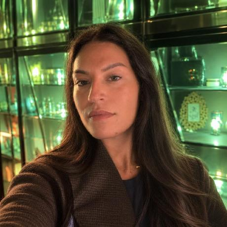

Product · Research · Data · Circular Systems
I sit at the intersection of rigorous research and real-world products — translating data into decisions, and evidence into impact.

healthcare workers analysed
demo assets across multiple products
hackathons, 4 working prototypes
native iOS app, built end to end
01
Research Foundations
Research Masters in Demography & Sociology, with a deep grounding in statistical methods and population-level thinking.
02
Data-Driven Practice
Academic focus in statistics and data analysis — bringing quantitative rigour to every product and business challenge.
03
Product & Circular Systems
Working in product and business tech, bridging analytical insight and strategic execution, with circular systems and zero waste as a through-line.
Skills & Tech Stack
Tap a row to expandData & AnalysisPython, R, STATA, SQL…11
PythonRSTATASQLPandasJupyterStatistical AnalysisRegression AnalysisData VisualisationPower BIGraph & Data Modelling
Product & BusinessProduct Strategy, Roadmapping, Agile / Scrum, Stakeholder Management…09
Product StrategyRoadmappingAgile / ScrumStakeholder ManagementUser ResearchJiraConfluenceAsanaFigma
Research MethodsDemographic Analysis, Ethnographic Methods, Interview Design & Analysis, Survey Design…07
Demographic AnalysisEthnographic MethodsInterview Design & AnalysisSurvey DesignMixed MethodsSystematic Literature ReviewAcademic Writing
Circular Solutions & Zero Waste ManagementCircular Economy, Zero Waste Management, Urban Sustainability, Energy Systems Analysis…05
Circular EconomyZero Waste ManagementUrban SustainabilityEnergy Systems AnalysisSpatial Analysis (QGIS)
Dev & ToolsTypeScript, Rust, Java, C++…09
TypeScriptRustJavaC++GitHubVercelGoogle CloudNotionMicrosoft 365